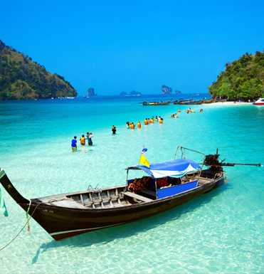
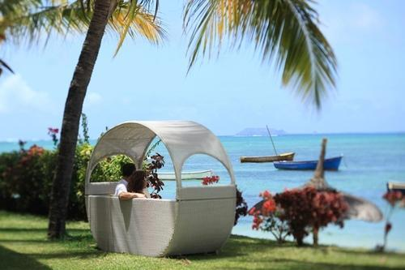
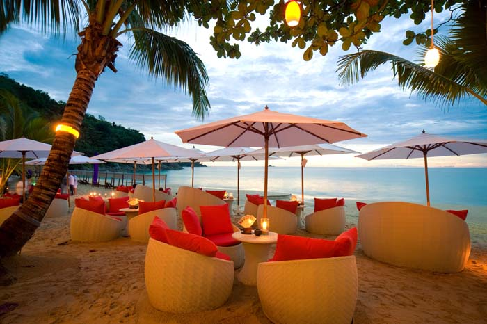

Andaman & Nicobar Package
|
 |
 |
 |
5Days/4Night
Jumbo Discount Price Rs.86,999/-
About the Destination
The Andaman and Nicobar islands are a group of 572 islands that lie at the cusp of the Andaman Sea and the Bay of Bengal. These islands are divided into five broad categories - Great Andaman, Little Andaman, Ritchie's Archipelago, East Volcano Islands, and Sentinel Islands.
Experience Andaman & Nicobar On Your Honeymoon
Along with the beaches, there is a lot on offer for couples on Andaman packages. The islands have a thriving tourism industry that attracts travellers from the world over. Apart from the quintessential sunbathing on the beach, there’s a lot to be excited about. With a multitude of adventure activities such as snorkelling, parasailing, scuba diving, canoeing, there’s never a dull moment with your loved one by your side.
Best Time to Visit Andaman & Nicobar
November to May is considered to be the best period to visit the islands. Monsoons are best avoided as the region experiences high tides and heavy rainfall. The summer months can prove to be very hot and humid and, therefore, most Andaman honeymoon packages are available for winter and spring months.

|
|